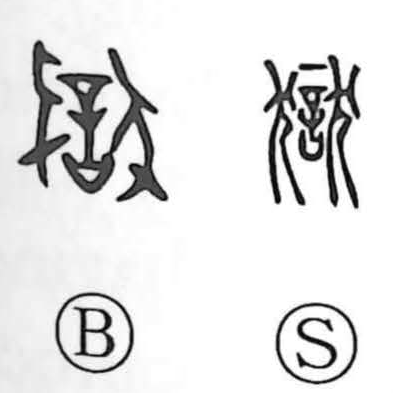

獄

Uncategorized
Kun: hitoya | On: goku
prison ・ trial ・ lawsuit
Explanation
Shirakawa reads 獄 as a compound of 言 and 狀. 言, in its ritual sense, shows an oath pronounced over a covenant vessel with a tattooing needle laid upon it—the speaker invokes the gods and vows to accept tattooing if the oath is false. 狀 represents the dog victims offered by both sides at the outset of a lawsuit. Together they depict the formal beginning of a trial: sacrificial dogs are presented and a solemn oath is sworn before the deities. From this original sense of adjudication, the character also came to mean a prison for holding the person judged guilty. While other legal graphs (such as 慶, 善, 法/灋) point to the sacred horned beast 解廌 used in ordeals, 獄 preserves the memory that dogs, too, figured in these ritual proceedings.